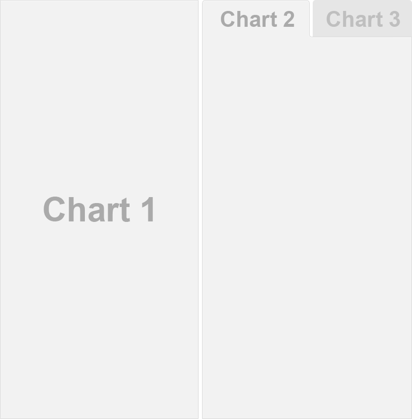
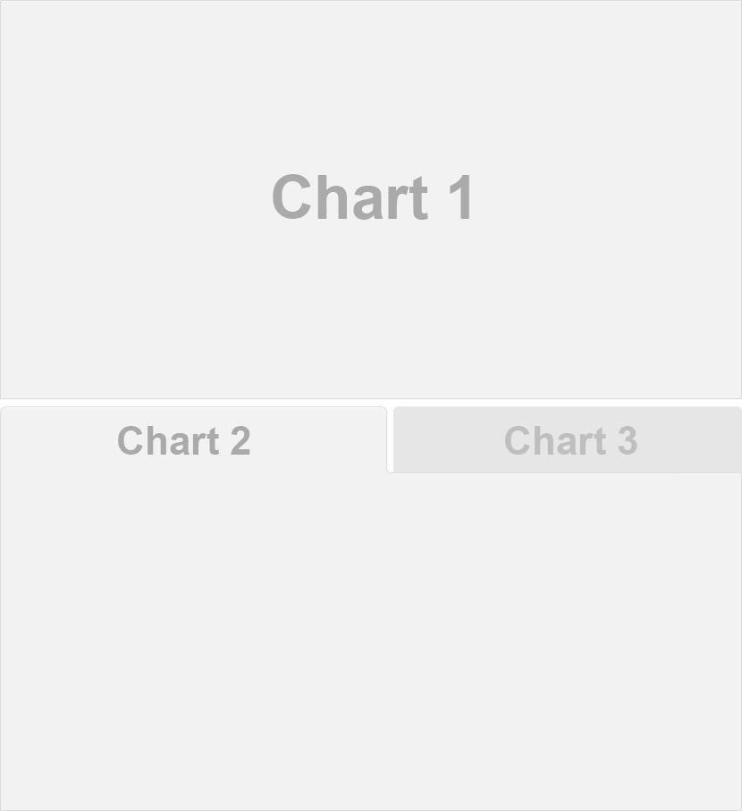

Overview
This page includes a variety of sample layouts which you can use as a starting point for your own dashboards.
When creating a layout, it’s important to decide up front whether you want your charts to fill the web page vertically (changing in height as the browser changes) or if you want the charts to maintain their original height (with the page scrolling as necessary to display all of the charts).
This behavior is controlled via the vertical_layout
output option, which defaults to vertical_layout: fill.
Filling the page is generally a good choice when you have only one or
two charts vertically stacked. Alternatively you can use
vertical_layout: scroll to specify a scrolling layout,
which is generally a better choice for three or more charts vertically
stacked.
Chart Stack (Fill)
This layout is a simple stack of two charts. Note that one chart or
the other could be made vertically taller by specifying the
data-height attribute.
Chart Stack (Scrolling)
This layout is a simple stack of three charts. To provide enough room
to display all the charts a scrolling layout is used
(vertical_layout: scroll). Note that because of its ability
to scroll this layout could easily accommodate many more charts
(although for large numbers of charts you might consider organizing them
into Multiple Pages).
Focal Chart (Top)
This layout fills the page completely and gives prominence to a
single chart at the top (with two secondary charts included below). To
achieve this layout it uses orientation: rows and specifies
data-height attributes on each row to establish their
relative sizes.
Focal Chart (Left)
This layout fills the page completely and gives prominence to a
single chart on the left (with two secondary charts included to the
right). Note that data-width attributes are specified on
each column to establish their relative sizes.
Chart Grid (2x2)
This layout is a 2x2 grid of charts. This layout uses the default
vertical_scroll: fill behavior however depending on the
ideal display size for the charts it might be preferable to allow the
page to scroll (vertical_layout: scroll). Note also that
orientation: rows is used to ensure that the chart
baselines line up horizontally.
Tabset Column
This layout displays the right column as a set of two tabs. Tabs are especially useful when you have a large number of components to display and prefer not to require the user to scroll to access everything.

Tabset Row
This layout displays the bottom row as a set of two tabs. Note that
the {.tabset-fade} attribute is also used to enable a fade
in/out effect when switching tabs.

Multiple Pages
This layout defines multiple pages using a level 1 markdown header
(==================). Each page has its own top-level
navigation tab. Further, the second page uses a distinct orientation via
the data-orientation attribute. The use of multiple columns
and rows with custom data-width and
data-height attributes is also demonstrated.
Storyboard
This layout provides an alternative to the row and column based layout schemes described above that is well suited to presenting a sequence of data visualizations and related commentary.
Note that the storyboard: true option is specified and
that additional commentary is included alongside the storyboard frames
(the content after the *** separator in each section).
Input Sidebar
This layout demonstrates how to add a sidebar to a flexdashboard page
(Shiny-based dashboards will often present user input controls in a
sidebar). To include a sidebar you add the .sidebar class
to a level 2 header (-------------------):
Input Sidebar (Global)
If you have a layout that uses Multiple
Pages you may want the sidebar to be global (i.e. present for all
pages). To include a global sidebar you add the .sidebar
class to a level 1 header (======================):
Mobile Specific
To customize your dashboard for display on small mobile screens you
can either exclude selected components entirely or create
mobile-specific variations of components. To exclude components you
apply the {.no-mobile} class attribute. To use a
mobile-specific rendering you create two identically titled components
and apply the {.mobile} attribute to one of them.
For example, the following dashboard has a “Chart 1” that is included in mobile and desktop layouts, a “Chart 2” that is excluded from mobile layouts, and a “Chart 3” that has a custom variation for mobile: